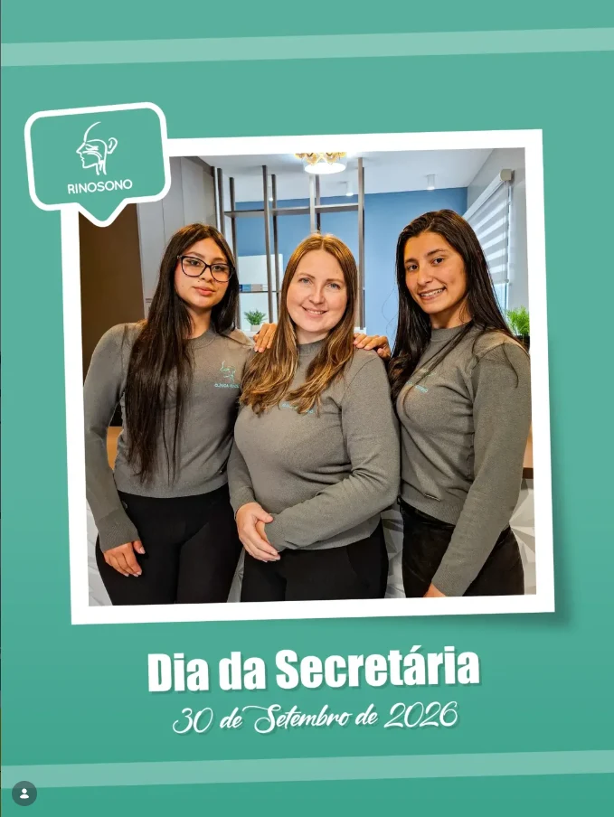

Clínica Rinosono · Lages
A clínica e sua história
A Clínica Rinosono atende em otorrinolaringologia e sono na Rua Lauro Muller, 880, no Centro de Lages, desde 2002. Veja o espaço, a recepção e os marcos da história.
Em Lages, na Rua Lauro Muller
A Rinosono recebe pacientes de Lages, da região da AMURES, do Meio Oeste e do Alto Vale do Itajaí. Na Rua Lauro Muller, nossa equipe acolhe, orienta e organiza cada etapa do atendimento, desde o primeiro contato. Veja como chegar e os horários.


2002
Fundação do Instituto Catarinense de Otorrinolaringologia e Medicina do Sono.
2004
Início da realização de polissonografia, um marco na história da clínica.
2020
Mudança para o novo endereço, ampliando o espaço dedicado ao atendimento.
Agende pelo WhatsApp ou telefone
A recepção responde de segunda a sexta, das 8h às 12h e das 14h às 18h.
Agendar pelo WhatsApp(49) 3222-9165Segunda a sexta · 8h às 12h e 14h às 18h